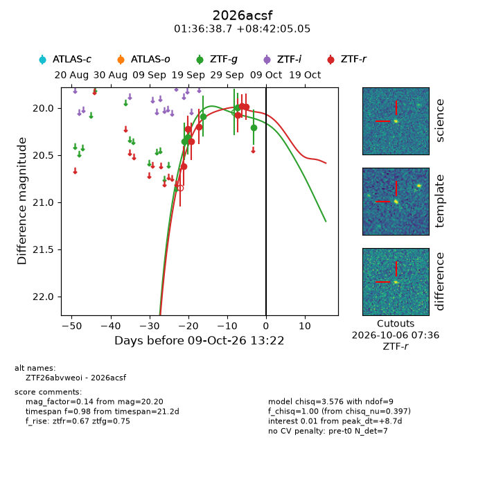
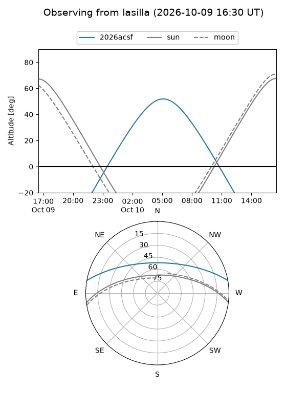
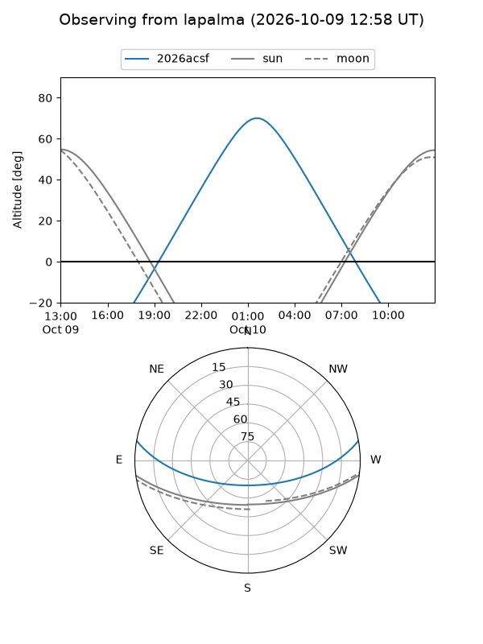
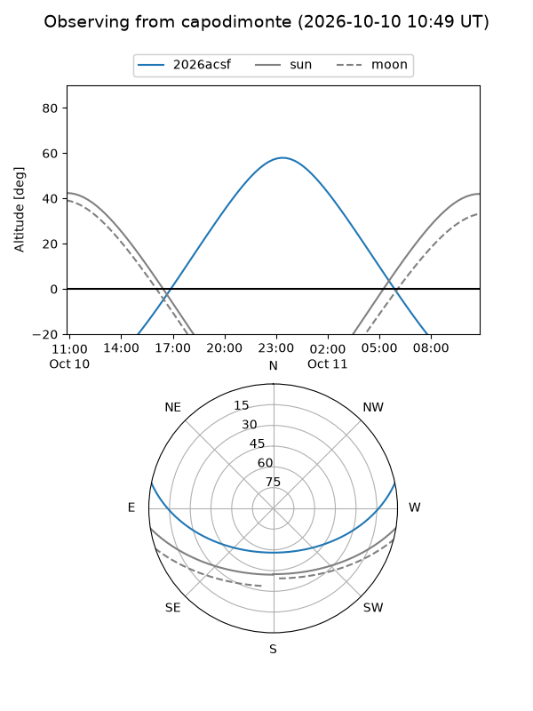
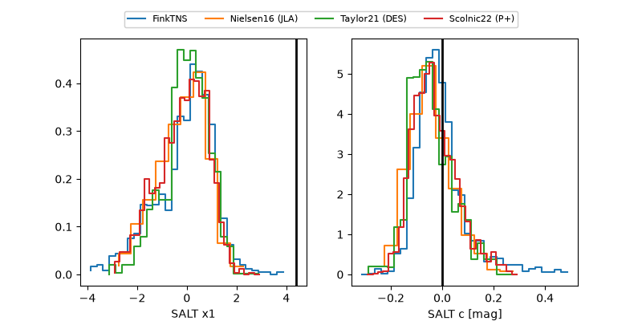

2026acsf
Target 2026acsf at 2026-10-09 13:25
Aliases and brokers:
FINK-ZTF: ztf.fink-portal.org/ZTF26abvweoi
Lasair-ZTF: lasair-ztf.lsst.ac.uk/objects/ZTF26abvweoi
ALeRCE-ZTF: alerce.online/object/ZTF26abvweoi
YSE-PZ: ziggy.ucolick.org/yse/transient_detail/2026acsf
TNS name: wis-tns.org/object/2026acsf
Direct TNS query: direct search
alt names
ZTF26abvweoi (ztf,fink_ztf)
2026acsf (tns,yse)
Coordinates:
equatorial (ra, dec) = 24.1611,+8.70140
equatorial (HMS+DMS) = 01:36:38.67,+08:42:05.05
galactic (l, b) = (141.5015,-52.53281)
Flags:
peak dt: +8.7
Photometry:
last ztfg=20.20, ztfr=19.99
5 ztfg, 7 ztfr detections
Lightcurve

Visibility



Additional plots
